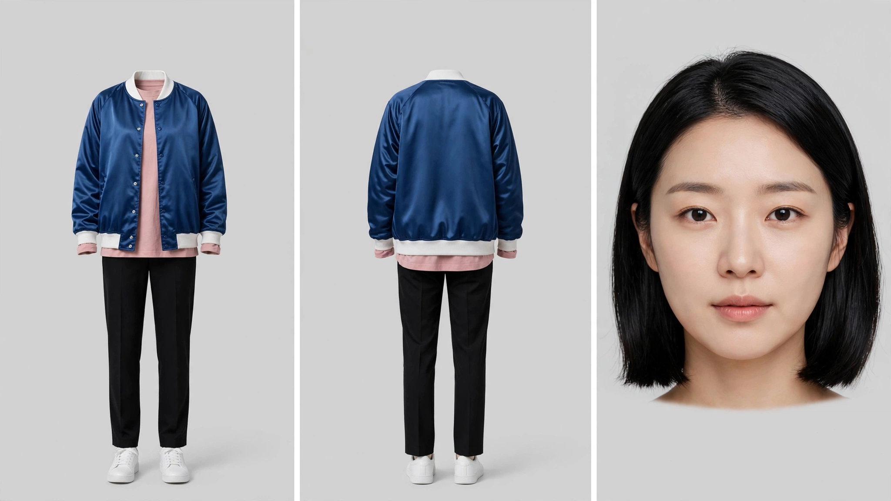
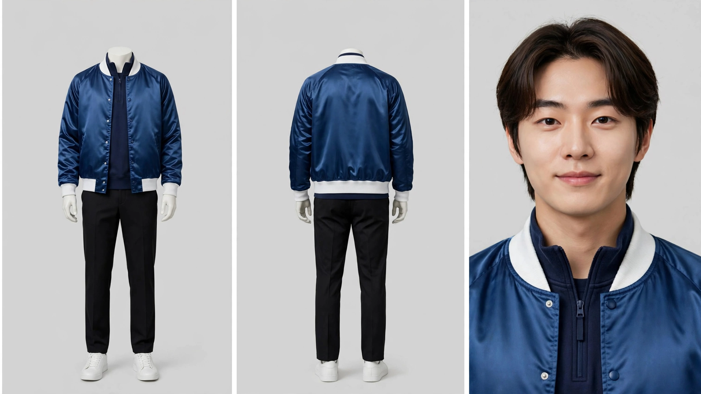
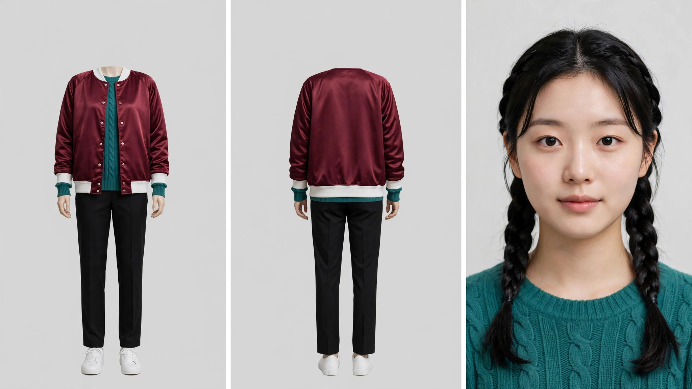
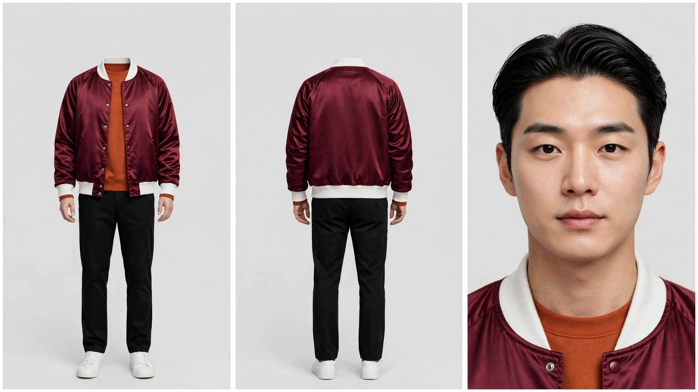
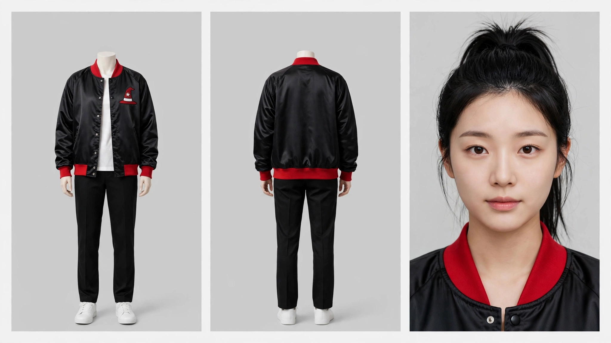
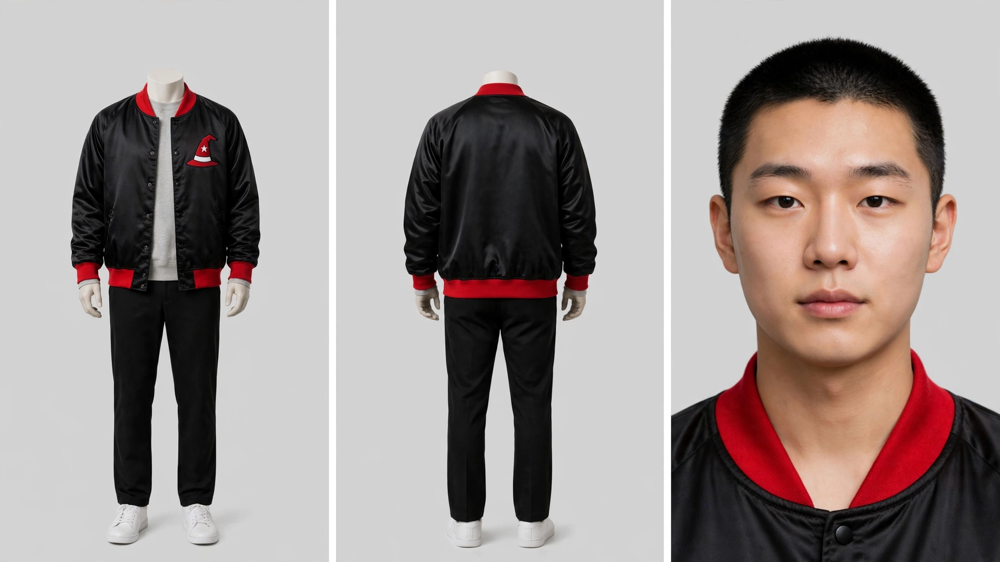

각 시트는 마네킹 정면 · 마네킹 후면 · 얼굴 클로즈업 세 패널입니다.
점퍼는 색으로만 만들고 구단 로고·글자·번호는 넣지 않습니다.
가슴 엠블럼은 아직 없습니다 — 인물이 확정된 뒤에 별도로 얹습니다.
규격은 제가 이미 확인했습니다
마네킹 패널에 머리·얼굴이 없다 — 네 장 모두 ✅ (T19 남자는 1판에서 후면 마네킹에 머리가 붙어 다시 뽑았습니다)
세 패널의 옷이 같다 — 네 장 모두 ✅
글자·로고·엠블럼·번호가 없다 — 네 장 모두 ✅
대표님께 여쭙는 것은 네 번째 항목 하나입니다 — 이 사람이 이 곡의 화자로 맞는가.
T19 · NC 다이노스마린블루
창원 · 2011 창단 · 한일합섬 무산 후 21년을 기다려 생긴 팀 ·
홈팬 비율 74%로 10개 구단 1위 · 곡은 경상도 사투리로 씁니다
(「단디해라」 「떴다카이」 「그게 뭐꼬」).

T19 여자 · 30세 · 앞머리 없는 샤프한 어깨선 단발, 한쪽으로 깊게 가름 ·
안에 더스티 핑크 오버사이즈 셔츠 · 마린블루 점퍼에 흰 립

T19 남자 · 25세 · 다크브라운 중단발, 양쪽 귀 뒤로 넘김 ·
안에 네이비 쿼터집 스웨트 · 마린블루 점퍼에 흰 립
T20 · 키움 히어로즈버건디
서울 고척 · 모기업이 없어 구단 자체가 사업체 · 한국시리즈 우승 0회 ·
「한줌단」 · 홈 응원이 10개 구단 중 가장 조용합니다.
그래서 곡도 가장 조용합니다 — 「소리 작아도」 「조용해도」 「한줌이어도」가 반복됩니다.

T20 여자 · 24세 · 어깨 앞으로 내린 트윈 땋기 ·
안에 틸그린 케이블니트 · 버건디 점퍼에 흰 립

T20 남자 · 29세 · 윗머리 길게 한쪽으로 넘기고 옆은 짧게 ·
안에 번트 오렌지 맨투맨 · 버건디 점퍼에 흰 립
제가 걸리는 것 하나 — T20 여자가 어려 보입니다
발주는 24세인데 화면은 그보다 어리게 읽힙니다.
열 팀 공통 규격이 20대~30대 초라 규격 밖으로 보이시면 나이를 올려 다시 뽑겠습니다($0.01).
「이대로 좋다」시면 그대로 갑니다.
앞 회차와 겹치지 않는가
대표님이 「왜 매번 비슷한 사람들만 나오지」 하신 뒤로
머리·안옷·나이를 열 팀이 겹치지 않게 표로 배정하고 있습니다.
오늘 그 표에서 실제로 충돌 하나가 나와 잡았습니다 — 표가 T18 여자를 「땋기」로 잘못 알고
T20 여자에게 T18 과 같은 높은 포니테일을 줬습니다. T20 을 땋기로 옮기고, 표가 스스로
충돌을 잡도록 자물쇠를 걸었습니다.
회차
여자 머리
여자 안옷
남자 머리
남자 안옷
T18 kt 발행 완료분
높은 포니테일
민무늬 흰 티
아주 짧게 깎음
라이트그레이 크루넥
T19 NC
샤프한 어깨선 단발
더스티 핑크 셔츠
다크브라운 중단발
네이비 쿼터집
T20 키움
트윈 낮은 땋기
틸그린 케이블니트
윗머리 넘김
번트 오렌지 맨투맨
참고 — T18 배우(이미 승인하신 판)


여쭙는 것
「보고 싶은 얼굴인가」가 아니라 「이 곡의 화자로 맞는가」로 봐 주십시오.
T19 여자 — 21년을 기다린 창원 사람. 채택 / 반려?
T19 남자 — 같은 곡의 상대. 채택 / 반려?
T20 여자 — 조용한 구장에서 「한줌이어도 다 태운다」를 부르는 사람. 채택 / 반려? (나이 건 포함)
T20 남자 — 같은 곡의 상대. 채택 / 반려?
번호로만 답 주셔도 됩니다 — 예: 「1,2,4 채택 · 3 다시」
비용 — 시트 5판 $0.05 (T19 남자 규격 위반으로 1판 추가 · T20 남자 1판은 fal 생성 타임아웃으로 이미지 없이 끝나 다시 뽑음).
다음 순서 — 채택되면 ① 가슴 엠블럼(T19 공룡 · T20 은 근거를 다시 잡아야 합니다) → ② 인물 판 → ③ 투샷.
🔴 T20 엠블럼 「날개 달린 방패」는 근거가 없습니다. kt 「번개」와 같은 자리입니다 — 히어로즈 마스코트 공식명은
「히어로」이고 구단 엠블럼은 야구공을 관통하는 KIWOOM 글자라 못 씁니다. A/B로 따로 여쭙겠습니다.